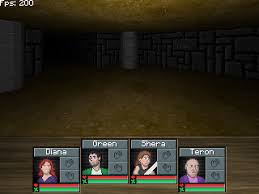
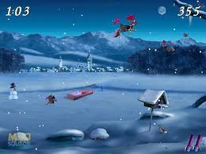
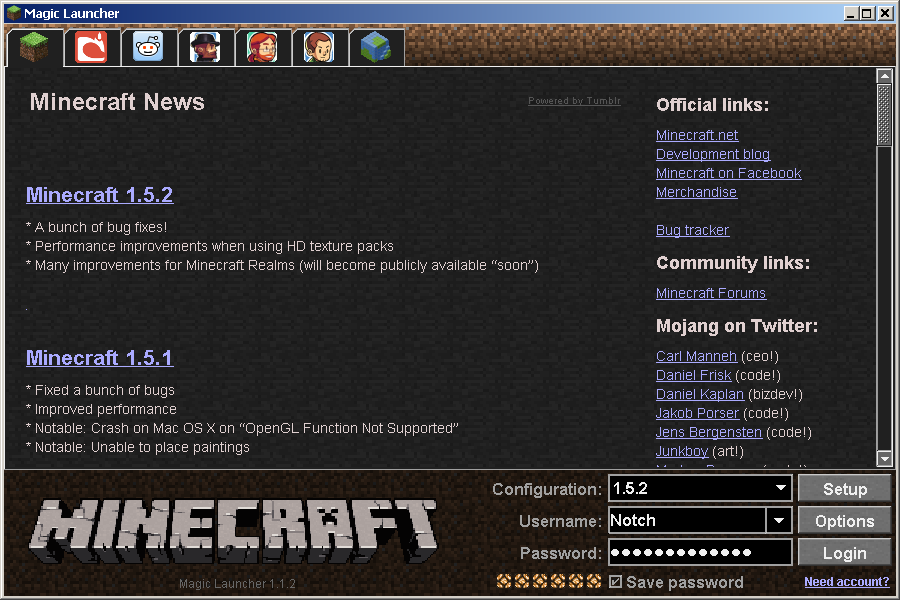

Welcome to website of VašekCZ230! |
|||
Menu |
Legend of the Chambered is a notable early game developed by Markus Persson, who is better known as the creator of Minecraft. 
Moorhuhn Winter Edition is a game in the popular Moorhuhn series, also known as "Crazy Chicken" in English-speaking regions. The series consists of casual shooting games that originated in Germany and became widely popular in Europe. 
Magic Launcher is a popular utility tool primarily used with Minecraft, the sandbox video game developed by Mojang Studios. 
|
||
|
|
|||